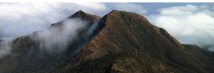
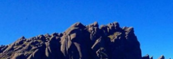
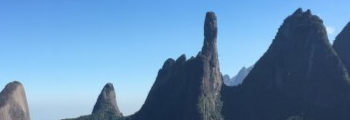
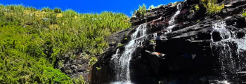

Serra Fina
A Travessia da Serra Fina é uma das mais clássicas travessias de montanha no Brasil. Com aproximadamente 30km de extensão, passando por mais de 13 montanhas acima de 2000mts de altitude, dentre elas, a Pedra da Mina que sustenta o título de 4° montanha mais alta, com 2798mts. Já foi considerada a MAIS DIFÍCIL DO BRASIL, hoje já não carrega mais este título, mas é de longe uma travessia fácil. Com paisagens espetaculares de campos de altitude, mares de nuvens e camping selvagem, esta travessia marca o coração dos mais aventureiros. Encravada na Serra da Mantiqueira, passando por SP, MG e RJ ela é ideal para os montanhistas mais experientes. Desafiando corpo e mente esta experiência certamente conquistará você! Venha expandir sua zona de conforto!

Marins x Itaguaré
A Travessia da Serra Fina é uma das mais clássicas travessias de montanha no Brasil. Com aproximadamente 30km de extensão, passando por mais de 13 montanhas acima de 2000mts de altitude, dentre elas, a Pedra da Mina que sustenta o título de 4° montanha mais alta, com 2798mts. Já foi considerada a MAIS DIFÍCIL DO BRASIL, hoje já não carrega mais este título, mas é de longe uma travessia fácil. Com paisagens espetaculares de campos de altitude, mares de nuvens e camping selvagem, esta travessia marca o coração dos mais aventureiros. Encravada na Serra da Mantiqueira, passando por SP, MG e RJ ela é ideal para os montanhistas mais experientes. Desafiando corpo e mente esta experiência certamente conquistará você! Venha expandir sua zona de conforto!

Parnaso
A Travessia da Serra Fina é uma das mais clássicas travessias de montanha no Brasil. Com aproximadamente 30km de extensão, passando por mais de 13 montanhas acima de 2000mts de altitude, dentre elas, a Pedra da Mina que sustenta o título de 4° montanha mais alta, com 2798mts. Já foi considerada a MAIS DIFÍCIL DO BRASIL, hoje já não carrega mais este título, mas é de longe uma travessia fácil. Com paisagens espetaculares de campos de altitude, mares de nuvens e camping selvagem, esta travessia marca o coração dos mais aventureiros. Encravada na Serra da Mantiqueira, passando por SP, MG e RJ ela é ideal para os montanhistas mais experientes. Desafiando corpo e mente esta experiência certamente conquistará você! Venha expandir sua zona de conforto!
